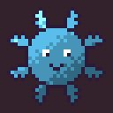
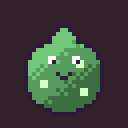
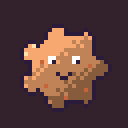
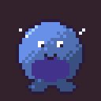
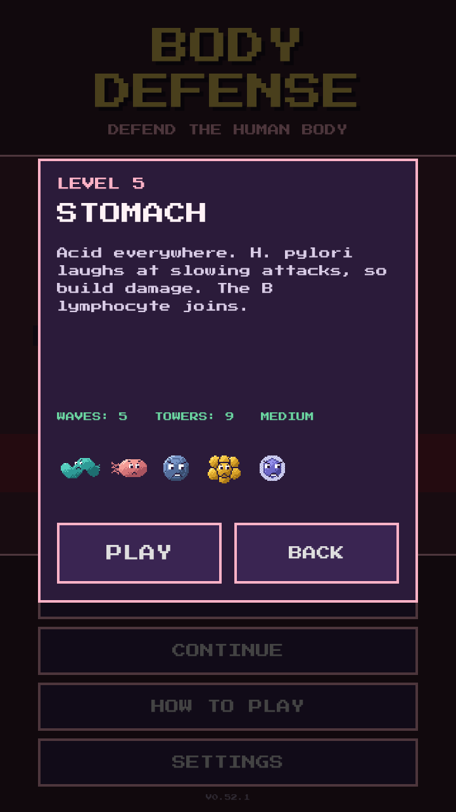
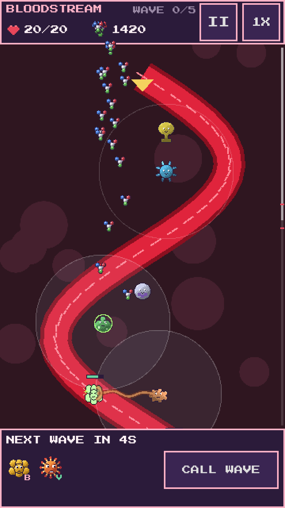
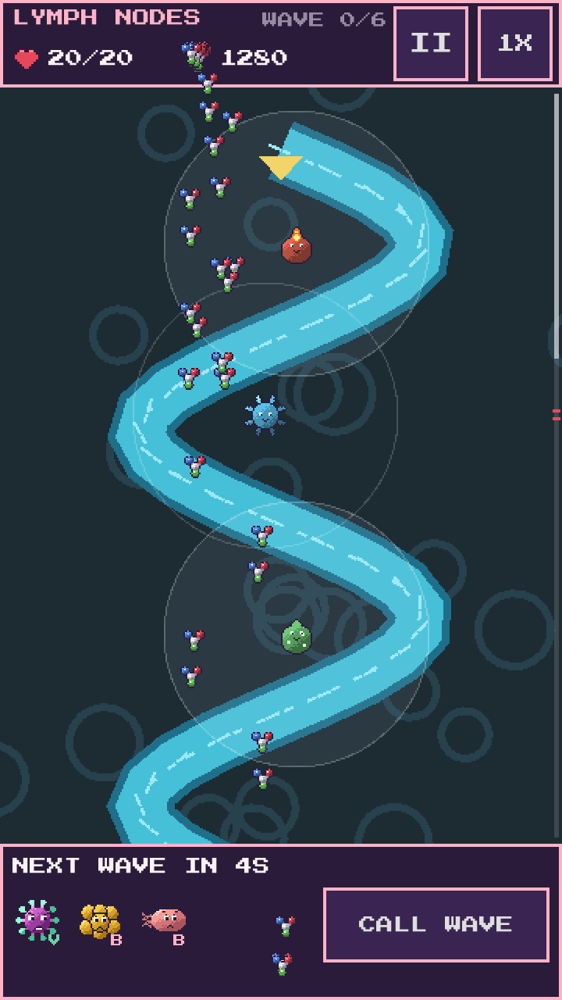

Body Defense: tower defense dentro do corpo humano
Algo está infectando o corpo. Só você pode impedir.
Body Defense é um jogo de tower defense offline em pixel art para Android. Vírus, bactérias e fungos marcham por veias e órgãos; você posiciona células de defesa para detê-los.
Em breve no Google Play Como funcionaResumo em fatos
- Plataforma
- Android 7.0 ou mais novo (celulares de 64 bits), jogado na vertical
- Situação
- Em breve no Google Play
- Preço
- Grátis para baixar e jogar, com um anúncio leve entre as fases; sem compras no app
- Offline
- Sim, o jogo inteiro roda sem internet
- Conta
- Não precisa
- Conteúdo
- 16 fases em dois capítulos, 10 defensores, 23 inimigos, 6 chefes, 3 dificuldades, modo infinito, 28 conquistas
- Idiomas
- Inglês, português, francês, espanhol, italiano, chinês, japonês
- Idade
- Feito para jogadores de 13 anos ou mais
- Dados
- Dados anônimos de jogo e rankings são opcionais; veja a política de privacidade
- Desenvolvedora
- Apolo Systems, Brasil
Como funciona
Construa
Toque num espaço vazio no caminho para colocar uma célula de defesa. Toque numa célula para vendê-la.
Ganhe aminoácidos
Inimigos derrotados soltam aminoácidos, sua única moeda. Construa com cuidado e mantenha a economia girando.
Conheça o inimigo
Toque num germe para ler a ficha dele. Alguns entram em dormência e ficam imunes, outros se dividem em dois, outros resistem à lentidão, outros voltam dos mortos.
Um polegar
Joga-se na vertical. Chame a próxima onda mais cedo, acelere o jogo ou pause para pensar.
10 defensores
Cada célula luta do seu jeito, e a combinação certa vence as fases.









Capturas de tela






Da garganta aos linfonodos
Lute pela garganta e traqueia, pulmões, esôfago, estômago, intestinos, corrente sanguínea, fígado, baço e linfonodos, e depois por um segundo capítulo de infecções por fungos: pele e unhas, boca e intestino, os pulmões de novo, os seios da face e o cérebro, e a sepse. Seis chefes esperam pelo caminho, do HIV ao Ebola.
Sem contas. Joga offline. Anúncios leves entre as fases. Música e efeitos sonoros originais. Disponível em inglês, português, francês, espanhol, italiano, chinês e japonês. Seu progresso fica no seu celular; os dados anônimos de jogo e os rankings são opcionais, e os anúncios seguem as suas escolhas de consentimento (veja a política de privacidade).
Perguntas e respostas
O que é o Body Defense?
Body Defense é um jogo de tower defense em pixel art para Android, ambientado dentro do corpo humano. Vírus, bactérias e fungos andam por veias e órgãos, e você posiciona células de defesa, como macrófagos e linfócitos, para detê-los. Tem 16 fases, 10 defensores, 23 inimigos e 3 dificuldades.
O Body Defense é grátis?
Sim. É grátis para baixar e jogar, e não tem compras no app. Mostra um anúncio leve (Google AdMob) entre as fases, nunca durante a partida.
Funciona offline?
Sim. O jogo inteiro roda sem conexão com a internet. A conexão só é usada para mostrar anúncios, para enviar dados anônimos de jogo se você concordar e para mostrar os rankings.
Tem anúncios?
Sim, um anúncio curto pode aparecer depois que você vence uma fase e toca para continuar. Anúncios nunca aparecem durante a partida, nem nas primeiras fases. Onde a lei exige, por exemplo na Europa e no Reino Unido, o jogo pede o seu consentimento antes.
Que dados ele coleta?
Não precisa de conta e não pede seu nome nem e-mail. Na primeira vez que você abre, o jogo pergunta se pode enviar dados anônimos de jogo (fases, resultados, torres usadas e um identificador aleatório de jogador); você pode dizer não, ou mudar a qualquer momento nas Configurações. Os anúncios, fornecidos pelo Google AdMob, coletam os próprios dados segundo a política do Google. O jogo em si não usa sua localização, contatos, câmera, microfone, fotos nem arquivos. Todos os detalhes estão na política de privacidade.
Em quais idiomas ele fala?
Inglês, português, francês, espanhol, italiano, chinês e japonês.
Quais versões do Android ele precisa?
Android 7.0 ou mais novo, em um celular de 64 bits (arm64). O jogo é jogado na vertical.
É um jogo para crianças?
É feito para jogadores de 13 anos ou mais, e seus anúncios não são direcionados a crianças. É um jogo, não uma aula nem um conselho médico, mas os inimigos são micróbios reais com seus nomes reais, então estudantes e curiosos podem aprender alguns fatos enquanto jogam.
Onde eu consigo?
O Body Defense está chegando ao Google Play para Android. Esta página vai levar à loja assim que o jogo for público.
Quem fez?
O Body Defense é feito pela Apolo Systems, um estúdio independente no Brasil.
Como falo com o desenvolvedor?
Escreva para contact.apolosystems@gmail.com. Sugestões e dúvidas são bem-vindas.
Contato
Sugestões e dúvidas: contact.apolosystems@gmail.com